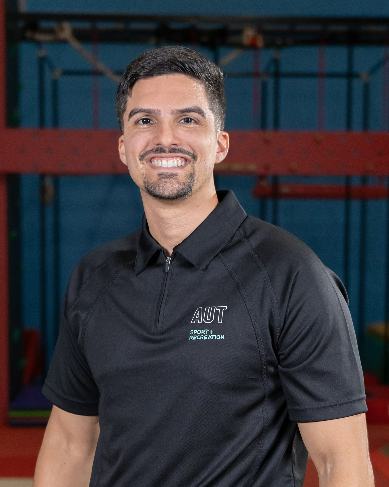

José Antonio Martínez-Rodríguez
Base Running Science
Doctoral researcher (Sport & Exercise Science) | Auckland University of Technology (AUT) | Sports Performance Research Institute New Zealand (SPRINZ) | Founder and owner of Base Running Science™
Featured article
Improving Base Running in Baseball: A Linear-Curvilinear Perspective
This article explored the following; 1) review the literature identifying the technical demands associated with curvilinear running and how these might differ from linear running; 2) identify in-field technology that may provide greater diagnostic insight into determinants of efficacy for various training methods to optimize base running ability; and, 3) detail training methods currently used for curvilinear sprint training and suggest more effective options.
About
I am a doctoral researcher in Sport and Exercise Science at Auckland University of Technology (AUT) and a member of the Sports Performance Research Institute New Zealand (SPRINZ). My work focuses on advancing base running performance in baseball through data-driven, sport-specific assessment and training—particularly the often-overlooked demands of curvilinear sprinting in game contexts.
What is Base Running Science?
Base Running Science is an independent, evidence-informed framework focused on how baseball players maintain speed while negotiating the curvilinear demands of running multiple bases. It translates base-running science into practical solutions through consultancy and advisory services, baseball-specific diagnostics, performance software and decision-support tools, and informed exercise prescription.
Understanding → the science of linear vs. curvilinear movement and how athletes enter, negotiate, and exit the curve. Base-running-specific interpretative framework.
Assessing → diagnostics using GPS-time, -velocity, and IMU foot pod variables for segmental analysis.
Improving → translating data into information to create knowledge that improve coaching decisions and exercise prescription.
Why Base Running Science matters?
Base running can influence critical moments in baseball, yet it remains comparatively underexplored and underintegrated within player development. While linear sprint speed is important, running multiple bases introduces curvilinear movement demands that require athletes to accelerate, negotiate the curve, manage changes in direction, and maintain speed throughout the running path. Base Running Science addresses this gap by examining linear and curvilinear sprint performance, force production, and the movement characteristics that may influence efficient multiple-base running. By transforming data into meaningful information, information into actionable knowledge, and knowledge into evidence-informed practice, Base Running Science aims to advance how base running is assessed, trained, and integrated into long-term player development.
Research highlights
Base Running Merch Concept
Selected writing
Background (extended bio)
I am a doctoral researcher in Sport and Exercise Science at Auckland University of Technology (AUT) and a member of the Sports Performance Research Institute New Zealand (SPRINZ), an internationally recognized centre for applied sport science research.
My work focuses on advancing base-running performance in baseball through data-driven, sport-specific assessment and training, with particular emphasis on the often-overlooked demands of curvilinear sprinting in game contexts. I developed the Curvilinear Ability Test (CAT), a novel field-based assessment designed to quantify baseball- and softball-specific curvilinear sprinting and change-of-direction performance.
Complementing this applied work, I have contributed research using MLB StatCast and Hawk-Eye data to establish updated normative values for base running performance in Major League Baseball and to show that linear sprint metrics alone do not adequately explain multiple-base running success. I hold a Master of Exercise Science (Exercise Physiology) from the University of Puerto Rico, Río Piedras Campus, where I built strong foundations in experimental design, statistical analysis, and applied sport physiology. I am also a CSCS,*D, with expertise in high-frequency wearable technologies for base-running diagnostics, including IMU foot pod systems and GPS.
Beyond research, I am committed to strengthening sport science and sport medicine practice in Puerto Rico through leadership, collaboration, and professional development. I am particularly interested in helping emerging professionals translate scientific data into applied practice, improving communication across sport medicine, performance, and athlete support teams, and supporting informed decisions that address both acute and chronic injury risk.
My long-term goal is to contribute with an MLB organization and elite baseball academy, helping integrate base running science into daily practice and performance decision-making. I aim to support a more evidence-based culture of player development by translating data into actionable strategies that enhance performance, reduce injury risk, and maximize athlete potential.